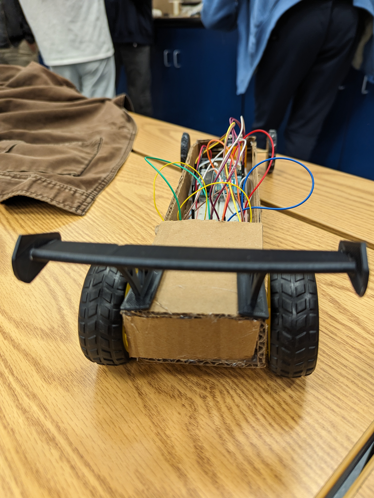
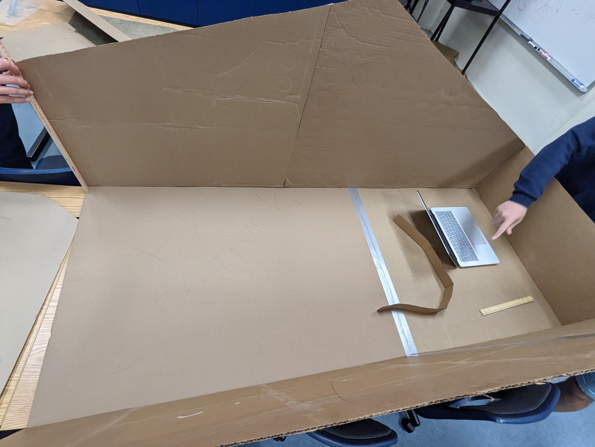
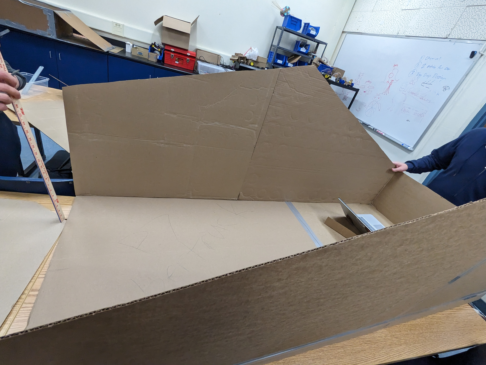
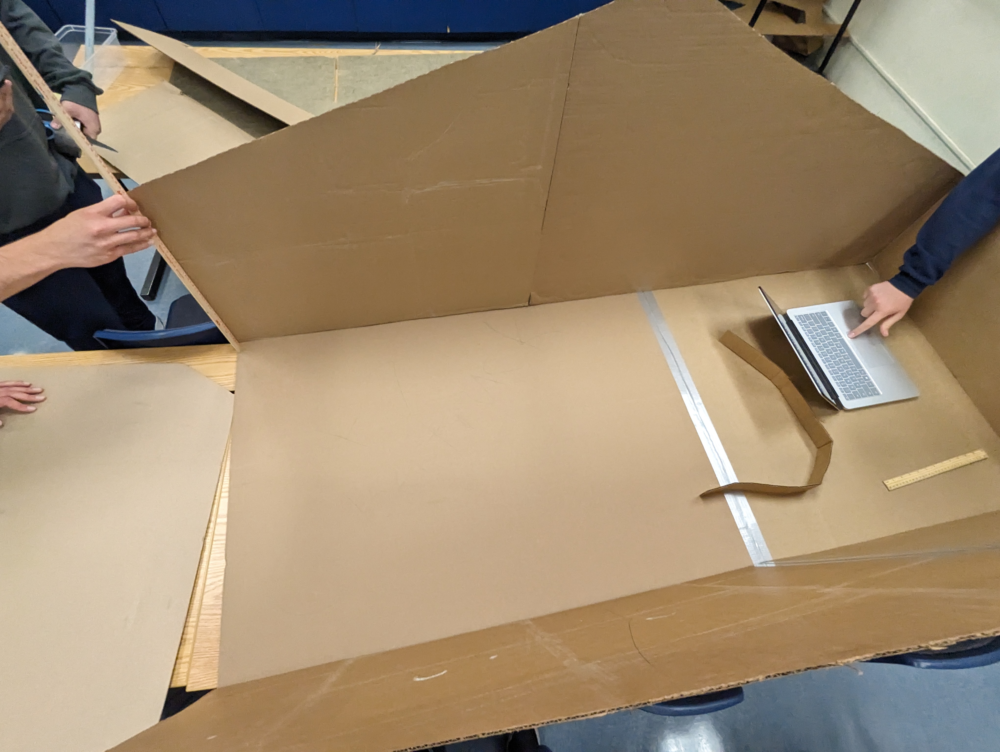
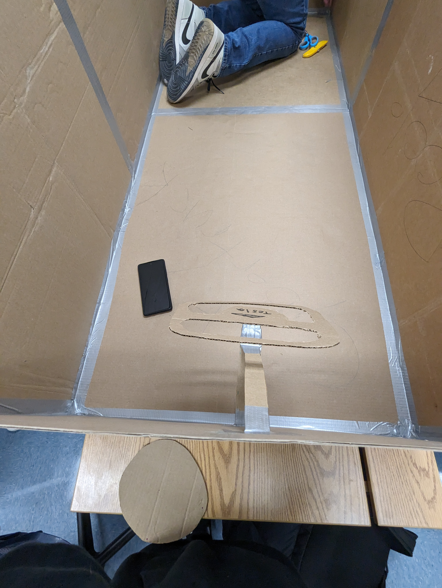
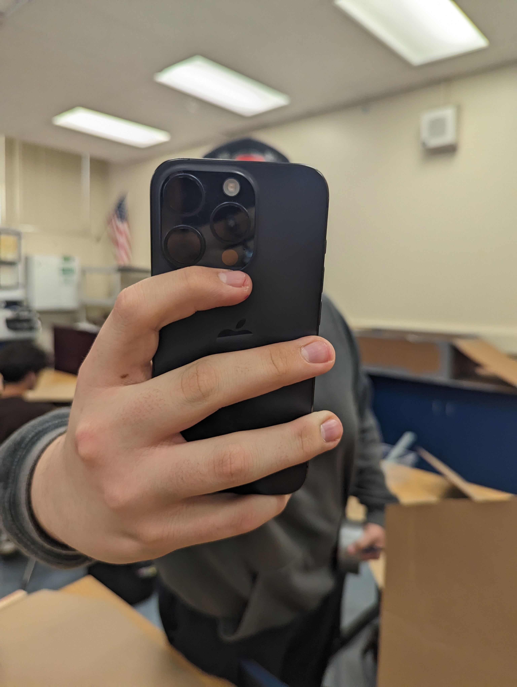
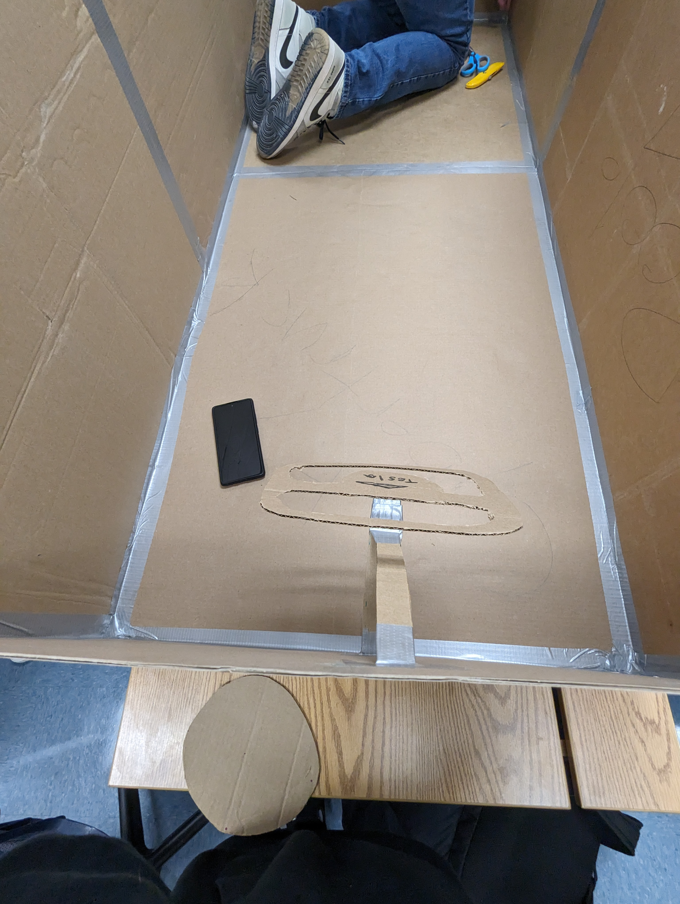
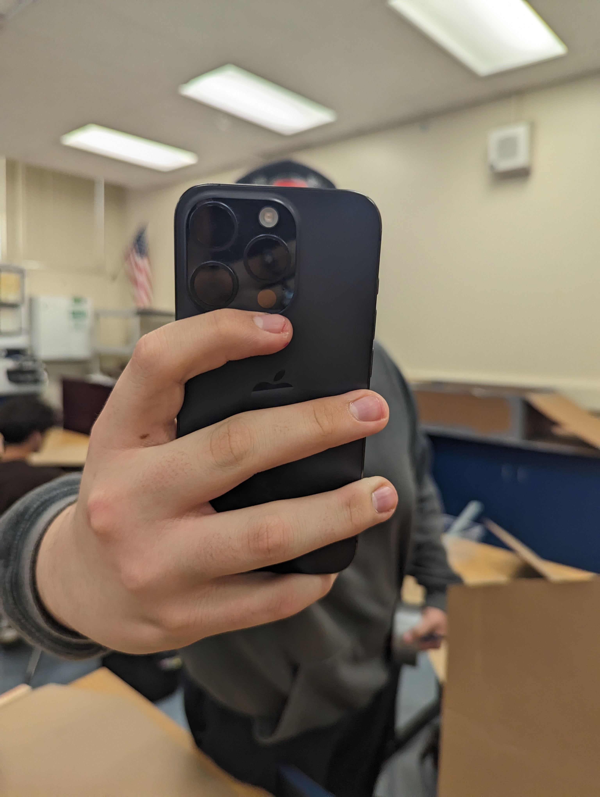

Dj's Website Semester 2
.jpg)
1/19/24- This week we did our oobleck project where we made oobleck. It was very intresting and fun to see not only how oobleck is made, but how it works. The more force that it isimpacted on it, the more it'll harden, but the less force that is applied to it, it'll become more like a liquid. The way we made oobleck was mixing the right amounts of water and cornstartch.
1/26/24- The project me and TrickyNick started this week is the Adruino Car project. In this project, we use TinkerCad to make a model of our car, code our Adruino, and power our Adruino using a breadboard. We so far are in the process of still using the breadboard to get out Adruino up and running.


2/5/24 - Last week, TrickyNick and I worked on our mechanics to get our call moving and rolling using the Adruino. I think we made good progress and did a good job with the help of Mr.Poole. This week our goals are too get started on the body of our car and finalize our mechanics for the car, by friday we should have our mechanics set in stone. Over the weeked I layed in bed, all day, saturday, sunday.
.jpg)
2/13/24 - Last week we worked on the body of our car by cutting out cardboard for the body of our car. We also completed the problems we had with the Adruino of our car. The things we can do better for our car and improve it, is make sure our Adruino doesn't break every 4 seconds.


2/26/24 - Our car did good, it did majority of the full distance to the other side of the room slowly. We only made one car.
3/4/24 - The project we are currently working on is trying to get an egg to not explode when you drop it, we are using many materials to try to make this experiment work. Our approach is to drop the egg while it is suspended by a parachute. Our design is strong in all aspects apart from the end part.

Website Update - 3/13/2024: Our eggdrop project went well, our egg survived without a single scratch on it and so did our actual structure we built around the egg to keep it safe. The fall was fast and had a decently hard landing, but you could tell by the fall that the egg was okay.
Over spring break I will be playing animal jam
Our new project that we started this week is called the Gutter Boat. The goal is for us to make a boat with given materials to go down a gutter for a certain distance as fast as possible. We are approaching the problem by making the best boat mankind has ever conceived. I expect to be the winner winner chicken dinner of my project.
During Spring Break I did nothing and stayed home
I am looking to accomplish decent grades this year
.png)
4-5-24- The project we completed in these past 2 weeks was the paper boat. Our project went bad becasue our boat didn't even last 3 seconds due to Nick absolutely throwing. I loved this class because it was easy and fun and had my friends in it. THis weekend im going to RAAAAAAAAAAAA"s
I couldn't get a video of us testing our project because Nick refused to send it to me
4/15/24- The project we started last week is our final project of the year, the cardboard boat project. We have to create a boat that is able to carry two people back and fourth in the school pool, our materials are only one roll of duct tape and cardboard. I'm excited to ride in the boat because im 5'3. The project we completed last week was the post-it note project. This summer im looking foward to getting my band's first offical couple songs finished and done with.

4/26/24- I have done nothing but be him, my partners for our group are making the boat to my liking, considering I am going to be the one in the boat. So far in these last two weeks we have done partially the cardboard boat and completley modeled it. The challenges we forsee on our boat is it sinking. I'm excited to not be at school. I have overcame the sterotype of being a mexican gardner because I have never gardended in my life.
5/6/24- The last two weeks our progress for our boat has skyrocketed. We are basically done with our boat and it is fully ready. This week we are going to put anything that comes to mind on the boat and put the last final finishing touches on it. We ain't concerned bout' nun. Orange juice because apple juice is usually overally sweet, and it's just not as good as orange juice.
  .jpg) 



5-13-24- Our boat is basically done and just ready to go on the water now. This mothersday weekend I gave my mom flowers and a card.
5/20/24 - Last week we worked on our final project assesment document. It is a document writing about the project in its entirety and assesing how each group member did. This week we are going to be working on nothing. This course was very good and I liked it a lot, it was very fun and engaging. I would have changed some of the partnering for my group projects and the amount of quizes we had. This summer I am going to hoepfully be finishing some music stuff, going out with friends, and summer school. For finals I only have to worry about Math, Physics, and English. Thank you Mr.Poole for this class I really enjoyed it and made a lot of memories here, I will rememmber this class.